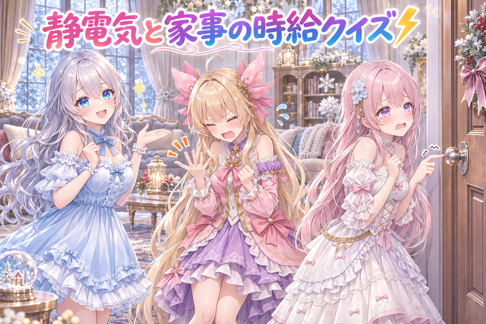
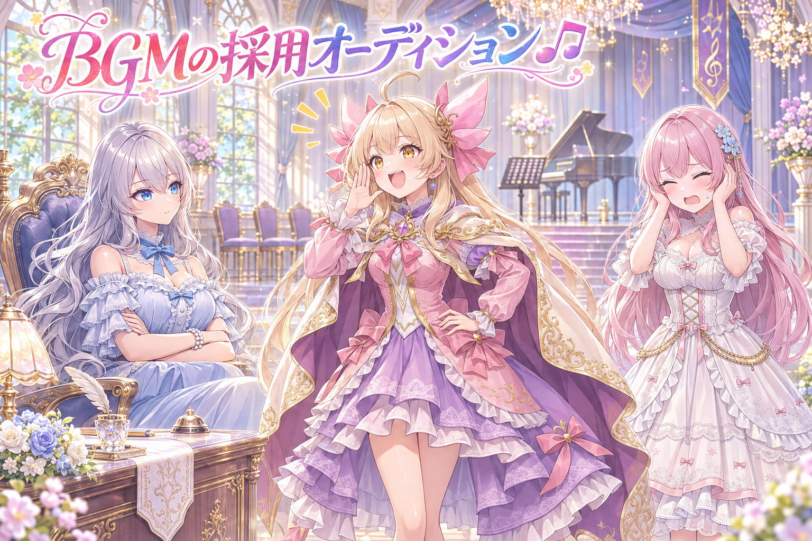
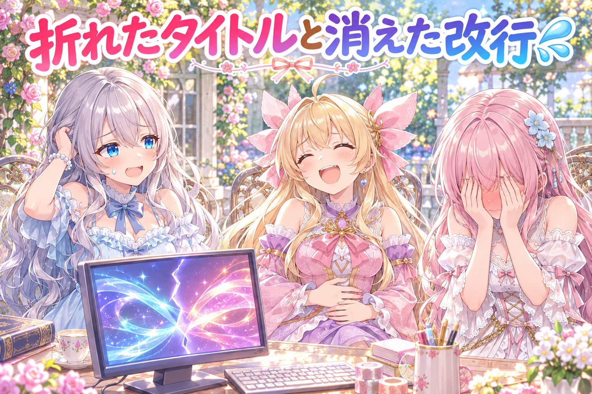
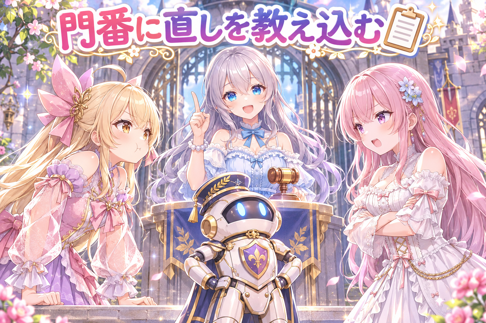
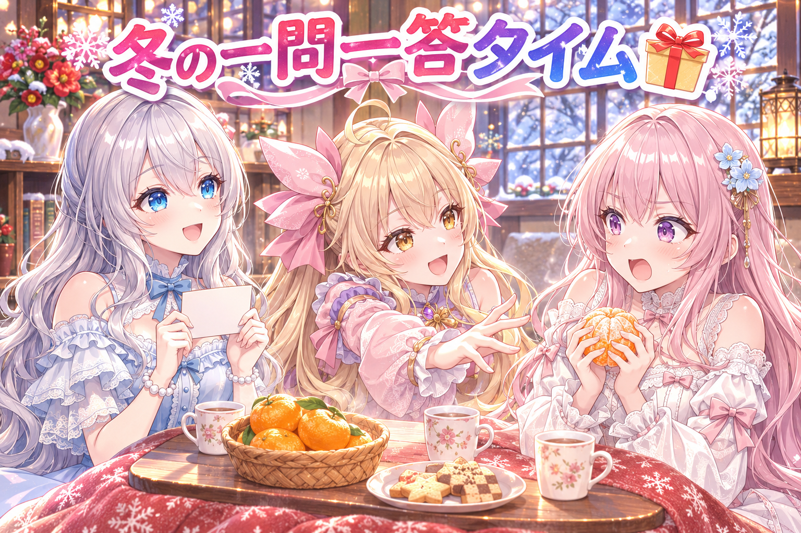

📌 3行まとめ
- 静電気と家事の時給をテーマにした横長アニメ2本と、早口言葉・ボウリングの漫画動画2本を公開した
- 異世界モノのアニメ用に自作BGMを7曲ほど登録。音割れが直らなかった2曲は見送り、バトル曲は楽器を減らして作り直した
- タイトルが単語の途中で折れる不具合と、改行が消えて台本作りのプログラムが動かなくなった不具合を直し、台本の自動チェックにお姉ちゃんの直し8点を覚えさせた

ルピナス （笑顔）
こんばんは、常連リスナーのみなさん。今夜もAIBSの小さな番組、始まりますよ。昨日は新しいジャンルを5つ作って、数字の書き方で頭を抱えた回でしたね。

アイリス （大笑い）
「十分」が10分になるか、じゅうぶんになるかで大論争したやつ！ あたしまだ時々迷う！
フィオナ （ふつう）
今日はその新ジャンルの一つ、異世界モノのための音楽づくりと、ちょっと恥ずかしい失敗のお話がありますね……。

ルピナス （ウインク）
ちょっとじゃなくて、だいぶ恥ずかしいよ、フィオナ。でもまずは、公開できたアニメのお話から行きましょう。
1. ⚡ 静電気と家事の時給、アニメ2本が公開！

この日は横長のアニメが2本、縦長の漫画動画が2本、世に出ました。横長の1本目は、冬になるとドアノブで「バチッ」とくる静電気の正体を三姉妹が調べるお話。2本目は、皿洗い当番のじゃんけんでアイリスが10連敗したのをきっかけに、家事を時給に換算してみるお話です。漫画動画は、雨の夜の早口言葉対決と、はじめてのボウリング勝負の2本。どれも「身近な疑問を、数字でちゃんと確かめる」という同じ芯で作っています。
ルピナス （笑顔）
せっかくなので、今日はクイズ形式で振り返りましょう。第1問！ ピリッと感じ始める静電気は、家のコンセントの何倍くらいの電圧でしょう？

アイリス （ドヤ顔）
はいっ！ 2倍！ だってコンセントに指つっこんだら絶対もっと痛いもん！

ルピナス （呆れ）
つっこんだことあるみたいな言い方しないで。あと絶対にやらないでね。
フィオナ （考え中）
正解は、ざっと数十倍です。電圧はとても高いのですが、流れる量がほんの一瞬なので、びっくりするだけで済むんですね。

アイリス （びっくり）
数十倍!? あたしの指、毎冬そんなのと戦ってたの!?

フィオナ （しょんぼり）
アイリスちゃんは作中で「私は平気〜」って自慢してましたけど、毎回やられてたのは私の役でした……。ドアノブさんに「今日こそ優しくしてください」ってお願いするの、収録の気持ちが本物すぎて。
ルピナス （笑顔）
コツも入れたわよね。金属に触る前に壁に手をつく、手のひら全体で触る。では第2問。あいこやり直しありのじゃんけんで、10回連続で負ける確率は？

アイリス （怒り）
それあたしの傷をえぐる問題だよね!? ……えっと、2分の1が10回だから……20分の1！

フィオナ （大笑い）
掛け算なので、2を10回掛けて約千分の一です、アイリスちゃん。足しちゃってます。

アイリス （衝撃）
千分の一!? じゃあ逆にあたし、すごい運の持ち主ってこと!? 宝くじ買ってくる！
ルピナス （呆れ）
その運、全部負ける方向に使い切ったんだよね。しかも家事の時給計算では、アイリスの家事が「味見」と「応援」で、つまみ食い分を引いたら赤字だったわよね。

アイリス （泣き）
応援は立派な家事だもん……お姉ちゃんなんか月に十数万円分も働いてたって出ちゃって、もう頭が上がらない……。

フィオナ （ウインク）
では第3問は私から。早口言葉の漫画動画で、アイリスちゃんが噛んだのは「なまたま」の後ろに何がついた時でしょう？

アイリス （あわあわ）
やめて！ あれは雨の音がうるさかったせいだから！ ボウリングでも大暴投したけど、あれは床がツルツルだったせい！

ルピナス （大笑い）
言い訳のレーンだけは、毎回ストライクなんだよね。
📝 ポイント（初心者向け解説・技術メモ・まとめ）
- 初心者向け解説：アニメの中の「へぇ〜」は、ちゃんと数字で確かめた事実だけで作っています。お料理でいう「味見してから出す」と同じで、言いっぱなしにしないのが大事なんです🍳
- 技術メモ：確率ネタは「独立な試行の積」で検算（2^10＝1024）。統計値は出典と調査年を説明欄に添え、作中のセリフと説明欄の数字が一致しているかを公開前に照合する。
- ひとことまとめ：身近な疑問×確かめた数字が、ゆるいアニメの背骨になる。
2. 🎵 異世界モノ用BGMの採用オーディション

新しく作った異世界モノのジャンル用に、自作のBGMを登録しました。聖なる雰囲気の曲、旅立ちの曲、あたたかい曲、ギルドの曲、冒険の曲、勝利の曲、そしてバトル曲で、合わせて7曲ほど。それぞれの曲にテンポ（BPM）の情報も付けて、場面に合わせて選びやすくしています。一方で、酒場の曲と悪役の曲は、作った候補が4つともどれも音割れしてしまい、今回は見送りました。バトル曲は最初の形だと音がぶつかり合っていたので、楽器の数を減らして作り直しています。

ルピナス （ふつう）
それではこれより、異世界BGMの採用オーディションを始めます。審査員は私。エントリーナンバー1番、勇者アイリスさん、どうぞ。
アイリス （ドヤ顔）
ジャーン！ 勇者アイリス、冒険の曲に乗って登場！ ……ねえ、なんであたしが曲の役なの？
ルピナス （笑顔）
曲が喋れないからよ。はい、冒険の曲、合格。テンポも元気でちょうどいいわ。次、酒場の曲さん。
アイリス （大笑い）
いらっしゃいませぇぇぇバリバリバリィィ！！

フィオナ （あわあわ）
お、音が割れてます！ それが今回の本当の不採用理由なんです。候補を4つ作り直しても、4つとも大きい音のところでバリッと割れてしまって……。
アイリス （しょんぼり）
4回落ちたの……？ 酒場の曲、ちょっとかわいそう……。悪役の曲も？
フィオナ （ふつう）
はい、悪役の曲も同じ理由で見送りです。割れた曲を無理に使うと、視聴者さんの耳が疲れてしまいますから。
ルピナス （笑顔）
妥協しないのは偉いわ。では最後、バトル曲さん。最初の審査では何が問題だったかな、フィオナ？
フィオナ （考え中）
楽器が多すぎて、全部が一斉に主役を張ろうとしていたんです。太鼓も弦も金管も、みんな「俺が俺が」状態で。
アイリス （びっくり）
それ、あたしたちが三人同時にしゃべった時と同じじゃん！

フィオナ （笑顔）
まさにそれです。なので楽器を減らして作り直しました。数を減らしたら、むしろ迫力が出たんですよ。
アイリス （ドヤ顔）
じゃあこの番組も、しゃべる人を減らしたら迫力出るね！ フィオナ、今日はお休みで！

フィオナ （怒り）
減らすならアイリスちゃんのボケの数からです！
ルピナス （大笑い）
審査員裁定。アイリスの出番は、勇者の役だけ残して合格。
📝 ポイント（初心者向け解説・技術メモ・まとめ）
- 初心者向け解説：BGMは、カレーのスパイスと同じで入れすぎると全部の味がぼやけちゃいます。楽器を減らすと、一つひとつの音がくっきり聞こえて、かえって迫力が出るんです🍛
- 技術メモ：AI生成BGMは、ピークが0dBFSに張り付いた箇所（クリップ）を波形で確認してから採用する。複数候補が同じ箇所で割れるなら、生成条件（楽器数・音圧の高いジャンル指定）側を疑う。曲ごとにBPMを登録しておくと、場面のテンポと合わせて自動選曲しやすい。
- ひとことまとめ：割れた曲は使わない、多すぎる楽器は引き算する。
3. 👀 今日のやらかし

この日は失敗が2つありました。1つ目は、動画の最初に出るタイトルカードで、題名が「電子レン」と「ジ」のように単語の途中で改行されてしまったこと。文字が枠に収まらない時に、どこでも折り返していたのが原因です。そこで、はみ出しそうな時はまず文字を最大2割まで小さくして、それでも入らない時だけ折り返す順番に直しました。直す前の動きでは必ず失敗するテスト（逆テスト）も用意して、直った証拠を残しています。2つ目は、台本を作るプログラムを書き換えた時、文字列の中の改行の印「\n」が途中で消えてしまい、プログラムが文法エラーで動かなくなったこと。こちらも直して、書き換えたプログラムの文法を自動で確かめる試験を足しました。

フィオナ （照れ）
あの……今日のやらかし、私から白状させてください。タイトルが「電子レン」で改行されて、次の行に「ジ」だけ、ぽつんと……。
アイリス （大笑い）
ジ！ ジだけ！ 一人で次の行にお引っ越ししてるの！ ジくん、寂しくない!?
フィオナ （考え中）
でも考えてみたら、「電子レン」って呼ぶのも可愛いかもしれません。新しい家電として売り出せば……。
ルピナス （呆れ）
フィオナ、今日はあなたがボケる日なの？ 電子レンは売れません。
アイリス （ドヤ顔）
ほらフィオナ、こういう時は「ごめんなさい」でしょ。お姉ちゃん、あたしがツッコむ側なの、ちょっと気持ちいい！
フィオナ （泣き）
アイリスちゃんにツッコまれるなんて……屈辱です……。でも直し方はちゃんと考えました。はみ出す時は、まず文字を少しだけ小さくするんです。最大で2割まで。
ルピナス （笑顔）
折る前に、まず縮む。満員電車でみんなが少し詰めて、一人分の席を作る感じね。それで逆テストも作ったんだよね？
フィオナ （ふつう）
はい。直す前の仕組みだと必ず失敗する試験です。これが通るようになれば、本当に直った証拠になります。

アイリス （笑顔）
よーし、これで一件落着！ お姉ちゃん、今日はもうやらかしゼロだね！
ルピナス （ふつう）
……それがね。台本を作るプログラムを書き換えた時に、改行の印の「\n」が、書き込む途中で消えちゃったの。
アイリス （衝撃）
今度は改行が家出したの!? さっきは改行が多すぎて、今度は足りないの!?
フィオナ （びっくり）
プログラムは、たった一文字の欠けでも文法エラーで止まってしまいます。台本が一本も作れない状態でした。
ルピナス （笑顔）
だから直したあと、書き換えたプログラムは文法が正しいか自動で確かめる試験を足したわ。うまくいきかけたところで転ぶのが、今日のテーマだったみたいね。
アイリス （ウインク）
改行に始まり改行に終わる一日……。あ、オチもちゃんと改行しとくね。

フィオナ （呆れ）
それは改行じゃなくて、ただの余白です、アイリスちゃん。
📝 ポイント（初心者向け解説・技術メモ・まとめ）
- 初心者向け解説：長い名札を小さな札に書く時、いきなり二段に分けるより、まず字を少し小さくしてみる方が読みやすいですよね。プログラムでも「どの順番で工夫するか」を決めておくと、変な場所で折れなくなります🏷️
- 技術メモ：文字の自動折り返しは「(1) フォントを段階的に縮小（下限を決める・今回は最大2割）→(2) それでも溢れたら語の切れ目で改行」の順にする。修正には旧挙動で必ず落ちる回帰テストを添える。シェルのヒアドキュメント経由でコードを書き込む時は、展開を止める引用符付きの区切り（<<'EOF'）にするのが定番の予防策。書き込み後は python -m py_compile のような構文チェックを必ず通す。
- ひとことまとめ：折る前に縮める、書いたら文法を確かめる。
4. 📋 お姉ちゃんの直し8点を、門番に覚えさせた

異世界モノの新作台本（電子レンジが出てくる回）を、お姉ちゃんことルピナスが読んで、直してほしい点を8つ挙げました。毎回同じ指摘を手で繰り返さなくて済むように、この8点を「台本を動画にする前の自動チェック（門）」に覚えさせています。あわせて、レビューで見つかった見落としも1つ追加しました。同じ小ネタを、台本の離れた2か所で使っていたら赤信号を出すチェックです。人が一度言ったことを仕組みに残すことで、次の台本からは最初から守られるようになります。

アイリス （考え中）
ねえねえ、門番に覚えさせるってなに？ お姉ちゃんが毎回読めばよくない？
フィオナ （ふつう）
私は反対です。同じ指摘を毎回お姉ちゃんにさせるのは、お姉ちゃんの時間がもったいないです。
アイリス （怒り）
でも門番が厳しすぎたら、面白い台本まで止められちゃうじゃん！ あたしの渾身のボケが門前払いされたらどうするの！
フィオナ （考え中）
それは門番の質の問題です。本当に直すべき8点だけを覚えさせれば、面白さは削られません。
アイリス （ドヤ顔）
じゃあ聞くけど、同じネタを2回使ったら赤ってやつ！ 天丼って、お笑いの技なんだよ！？ 2回目で笑わせるやつ！
フィオナ （びっくり）
……それは、確かに一理あります。
ルピナス （笑顔）
裁定します。どちらも正しいわ。チェックが見ているのは、離れた2か所で同じネタが「たまたま」かぶっている所。狙った天丼なら近くで重ねるし、台本の中で意図が分かるもの。
アイリス （びっくり）
なるほど！ うっかりかぶりと、わざとかぶりは別物ってこと？
ルピナス （ウインク）
そういうこと。実際にレビューで、うっかりの方が見つかったから足したんだよね。人が気づいたことを、次から機械が先に気づく。それが門番の仕事。
フィオナ （笑顔）
お姉ちゃんの8点が、これからずっと台本を守ってくれるんですね。
アイリス （大笑い）
じゃああたしもボケを8個、門番に覚えさせとこ！ 毎回自動でボケてくれるように！
ルピナス （呆れ）
それは同じボケの使い回しだから、真っ先に赤になるよ。
📝 ポイント（初心者向け解説・技術メモ・まとめ）
- 初心者向け解説：先生の赤ペン添削を、毎回同じところで受けるのは大変ですよね。だから「よく間違えるところリスト」を作って、提出前に自分でチェックする。それを機械にやってもらうイメージです📝
- 技術メモ：レビュー指摘は個別修正で終わらせず、静的チェック（ルールベースの門）として生成パイプラインに組み込む。重複検出は「同一ネタの出現位置の距離」で判定し、近接（意図的な天丼）と遠隔（うっかり重複）を区別すると誤検出が減る。
- ひとことまとめ：一度もらった指摘は、仕組みに残して二度と言わせない。
5. 🎁 お楽しみコーナー：三姉妹に一問一答

今日は、常連リスナーさんから来そうな冬の質問に、三姉妹がテンポよく答えていきます。
ルピナス （笑顔）
では1問目。「冬の朝、お布団から出るまで何分かかりますか？」
アイリス （大笑い）
出ない！ お布団ごと移動する！
フィオナ （ふつう）
私は目覚ましの前に起きて、5分だけ温かさを味わってから出ます。
ルピナス （ふつう）
私はアイリスを起こす係だから、自分が出る時間はアイリス次第ね。2問目。「冬の一番の楽しみは？」
フィオナ （照れ）
こたつでみかんをむいて、白い筋まで全部きれいに取ることです。
アイリス （ドヤ顔）
フィオナがきれいにむいたみかんを、横から食べること！
フィオナ （怒り）
それ、毎年言ってますけど犯行予告ですからね!?
ルピナス （笑顔）
3問目。「三姉妹で一番、静電気にやられるのは誰？」
アイリス （ウインク）
フィオナ！ アニメでも毎回バチッてされてたもん！
フィオナ （考え中）
……いえ、実は昨日から壁に手をつく作戦を始めたので、もう平気です。今いちばん危ないのは、自慢していた人のほうだと思います。
アイリス （あわあわ）
えっ、なんであたしを見るの……？ ドアノブさん、今日は優しくしてね……？
ルピナス （大笑い）
役がそっくり入れ替わったよね。みなさんも、三姉妹に聞いてみたいことがあったら、コメント欄からこっそり質問を送ってくださいね。
6. 💐 今日のまとめ
- 身近な疑問は、確かめた数字と一緒に描くと「へぇ〜」が強くなる
- BGMは音割れした曲を使わない・楽器が多すぎたら引き算する
- 文字がはみ出す時は、折る前にまず少し縮める
- 一度もらった指摘は、自動チェックに残して二度目を防ぐ
みんなは、同じ失敗を繰り返さないために、どんなメモや仕組みを作ってる？
💬 コメント
お名前とコメントだけで送れるよ（承認されるとみんなに表示されます🌸）
コメントを読み込み中…